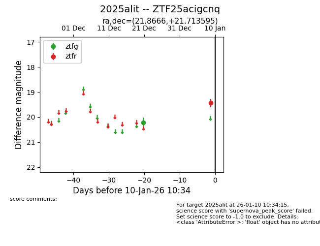
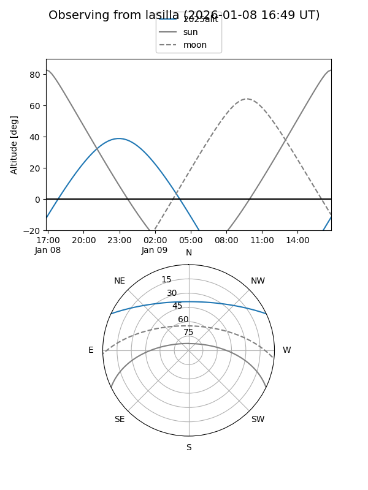
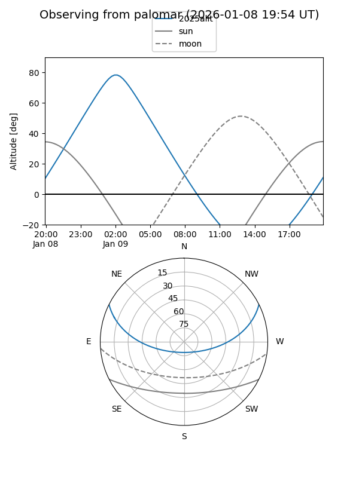

2025alit
Target 2025alit at 2026-01-09 12:49
Aliases and brokers:
FINK: link
Lasair: link
ALeRCE: link
TNS: link
YSE: link
alt names
ZTF25acigcnq (ztf,fink_ztf)
2025alit (tns,yse)
Coordinates:
equatorial (ra, dec) = 21.8666,+21.71359
equatorial (HMS+DMS) = 01:27:27.97,+21:42:48.94
galactic (l, b) = (133.9404,-40.38677)
Flags:
Photometry:
last ztfg=20.23, ztfr=19.44
1 ztfg, 1 ztfr detections
Lightcurve

Visibility


Additional plots